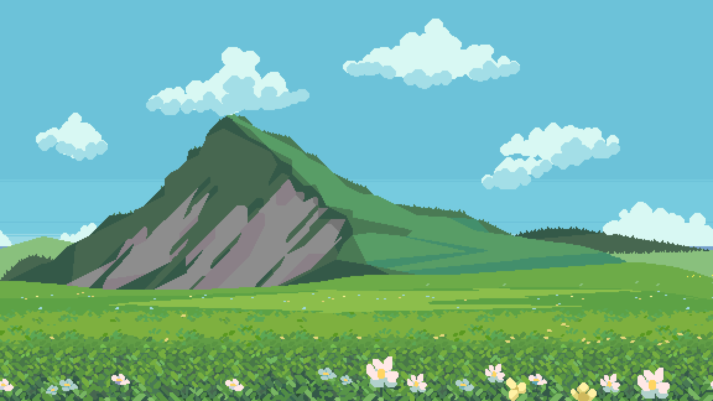
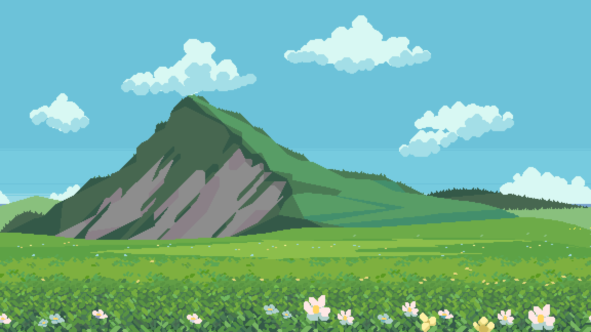
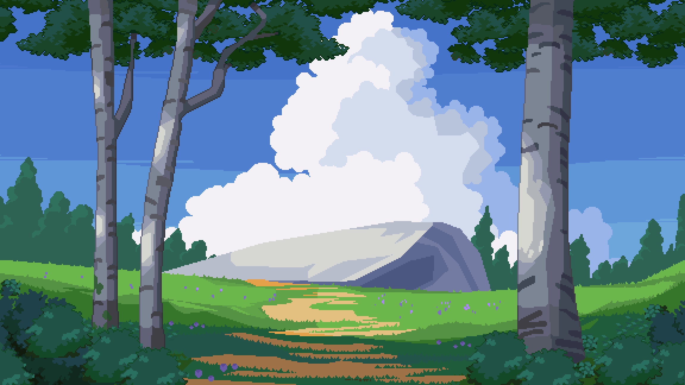
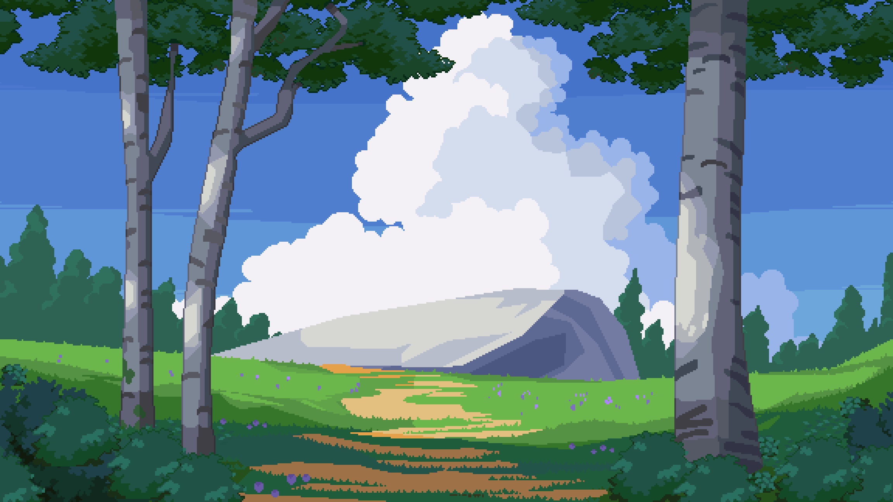

Click Me!

 

 


"Take my yoke upon you and learn from me, for I am gentle and humble in heart, and you will find rest for your souls."
In 2019, I graduated from Tohopekaliga High School. I started my university journey in the spring of 2020. I would have started sooner, but my entire family moved locations. I applied to Valencia College for their UCF Connect program. I wanted to get my Associate Degree in Computer Science and then transfer to the University of Central Florida after two years.
In 2021, Covid 19 took off. I spent most of my time studying, working, and finishing my courses. The lack of social interaction with other students made the experience rigid. Everyone was at home. My two younger brothers were also there with me, doing online school. It was super stressful at times. Time passed, and I pushed through. I was able to get most of my electives done.
In 2022, I finished my Associate Degree in Computer Science from Valencia. It was time for me to transfer over. On the first day of class, the professor talked too fast. I knew at that very moment Computer Science was not for me. So, I had to pivot to something that best suited me. I found it with the Digital Media bachelor's degree with their website/social platform track.
In 2023, I'm moving in momentum. I am glad I found something I'm good at. I thoroughly enjoy it. It's more than a career pursuit. It's about passion. I want to be the best at my craft, and I will be. It was dark for a little bit. Now, it's time to rise into the sunshine.
Monday, Tuesday, Wednesday, Thursday, Friday, Sunday. How many hours did you spend in a day? January, February, March, April, May, June, July, August, September, October, November, December. How many times did you fall into the flow state? I'm proven.